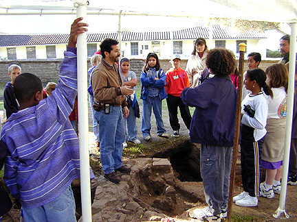

Crumpton Elementary Tour
San Juan Elementary Tour
The Fall 1999 Open House
On December 3rd, 1999, the students of SBSA 224s/324s
and the Museum Education Project sponsored an all-day archaeology and history
Open House for the 4th grade students of Crumpton Elementary in Marina
and San Juan Elementary in San Juan Bautista. The morning began with
an archaeology and museum tour for the students of Crumpton Elementary.
Because the children from Crumpton had previewed the CSUMB Institute of
Archaeology web site, they came in armed with many questions...and were
prepared for the many more questions asked of them by archaeologist and
Museum Education Project director Dr. Ruben Mendoza. When asked if
they could identify what an "artifact" was...one student correctly pointed
out that the Pokeman action figures attached to her jacket were indeed
artifacts. Of course, she was correct...so Dr. Mendoza allowed the
children to see and handle some of the artifacts from the Old Mission.
Because of the number of children that attended the many tours and activities
that day, Dr. Mendoza and his field assistant, Mr. Chris Dudzik, were assisted
by the many teachers and community volunteers and parents who helped to
make the day a great success.